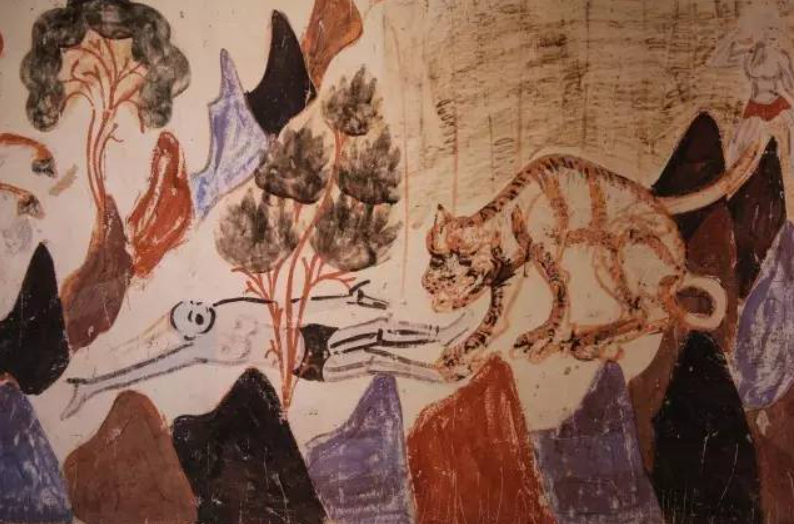
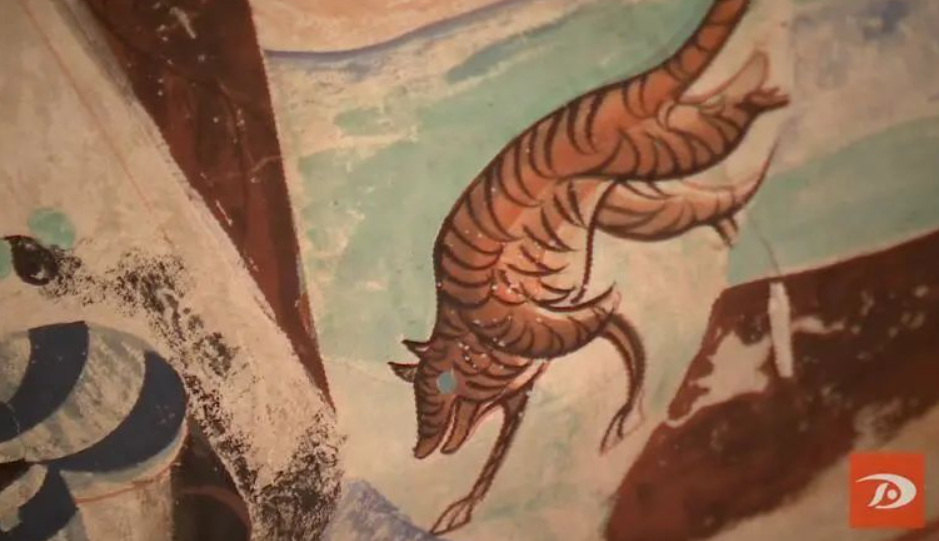

伏行虎
在莫高窟藏经洞出土的绢画《携虎行脚僧》中，老虎好似“黏人大猫”。这幅唐代绢画描绘了取经归来的僧人与虎相伴而行的场景。画面中，僧人脚穿草编凉鞋，身背装满经卷的沉重书箱， 一手拿佛珠，一手执木杖，目光沉着坚毅。在他身旁，是一只看上去毛茸茸、肉嘟嘟的“萌态”老虎。
据敦煌研究院专家介绍，这幅绢画笔触细腻、颜色淡雅，是“行脚僧”题材的精品之作。在中国古代，“行脚僧”形象一度流行画坛。敦煌壁画和藏经洞出土文物中，保留了至少20个“行脚僧”形象。 尽管路途孤寂艰险，但这些或“萌”或“猛”的老虎却始终与僧人相伴。
在莫高窟唐代第92窟窟顶，绘有一只黑色花纹的老虎。这只老虎并非“虎视眈眈”，而是静卧一旁显得“楚楚可怜”。千年前的画工，用流畅的线条勾画出老虎的躯体姿态， 用黑、白、褐等颜色描绘着老虎的毛色，着笔不多却形神兼备。
在开凿于北周时期的莫高窟第296窟中，有一幅经变画《五百强盗成佛图》。在山林之中，老虎与鹿对峙相望。壁画中的老虎没有敷彩，仅用赭红色颜料勾线。画工用寥寥数笔， 便勾勒出一只耳朵尖、眼睛圆、目光炯炯的猛兽。老虎与鹿的眼神相碰，构成了紧张的气氛。
敦煌莫高窟被称为“沙漠中的美术馆”。公元4世纪至14世纪，洞窟营造千年不绝。莫高窟现存洞窟735个、 壁画4.5万平方米、彩塑2000多身，藏经洞出土的文物达五六万件。

